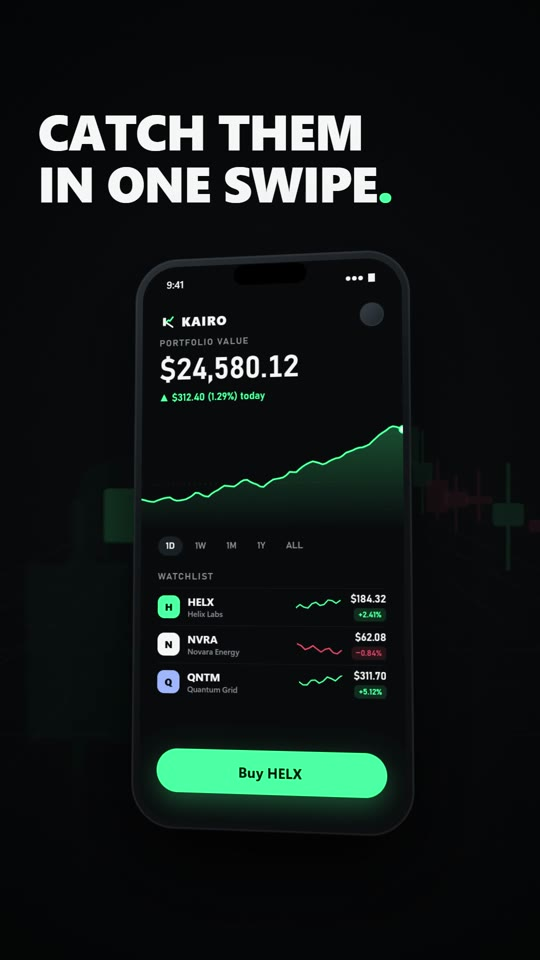
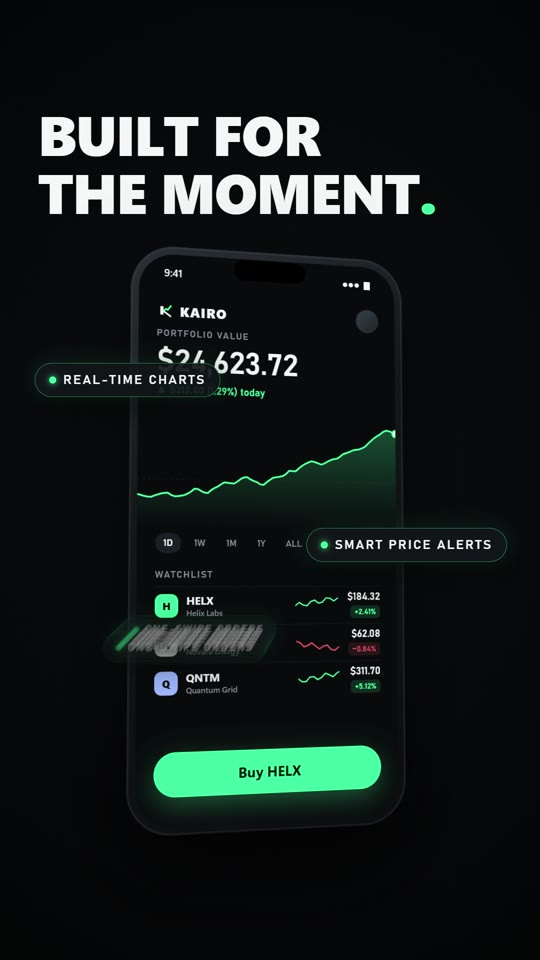
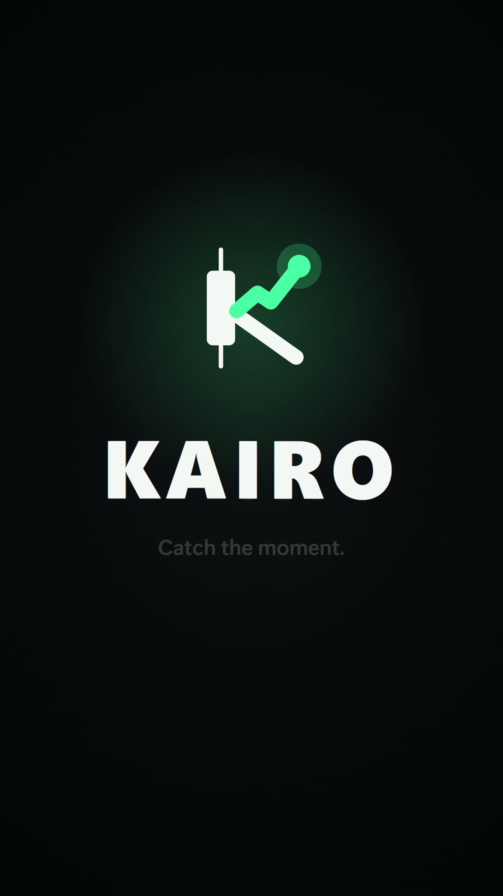

← All work
App launch promo
Kairo
A 15-second vertical launch promo for a fictional trading app: a live price, candlesticks, a one-swipe buy and the order filling, cut to fast type.
Format15s · 9:16
RoleConcept, design, animation, sound
BriefSelf-initiated
Year2026
The brief
Sell one idea, catching the moment, in 15 seconds on a phone screen. Dark UI with a single green, type that moves as fast as the market, and every beat readable with the sound off.
My role
Concept, design, animation, sound.
Self-initiated brief: Kairo is a fictional project made for this portfolio.
Process
Styleframes





